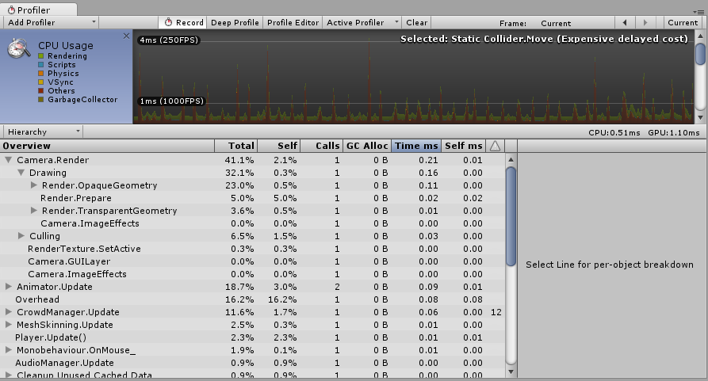
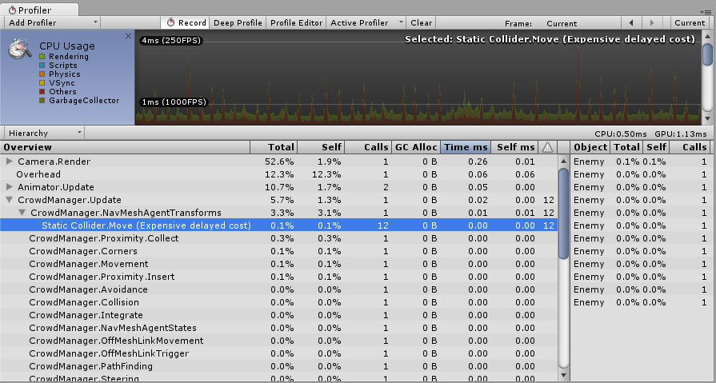

CPU Usage Profiler

The CPU Usage Profiler displays where time is spent in your game. When it is selected, the lower pane displays hierarchical time data for the selected frame. See documentation on the Profiler Window to learn more about the information on the Profiler timeline.
- Hierarchy mode: Displays hierarchical time data.
- Group Hierarchy mode: Groups time data into logical groups (such as Rendering, Physics, Scripts). Because children of any group can also be in different groups (for example, some scripts might also call rendering functions), the percentages of group times often add up to more than 100%.
Drag chart labels up and down to reorder the way the CPU chart is stacked.
Selecting individual items
When an item is selected in the lower pane, its contribution to the CPU chart is highlighted (and the rest are dimmed). Clicking on an item again de-selects it.

In the hierarchical time data, the Self column refers to the amount of time spent in a particular function, not including the time spent calling sub-functions. In the screenshot above, 41.1% of time is spent in the Camera.Render function. This function does a lot of work, and calls the various drawing and culling functions. Excluding all of these functions, only 2.1% of time is spent in the Camera.Render function itself.
The Time ms and Self ms columns show the same information but in milliseconds. Camera.Render takes 0.01ms but, including all the functions it calls, 0.21ms are consumed. The GC Alloc column shows how much memory has been allocated in the current frame, which is later collected by the garbage collector. Keep this value at zero to prevent the garbage collector from causing hiccups in your framerate.
The Others section of the CPU profiler records the total of all areas that do not fall into Rendering, Scripts, Physics, Garbage Collection or VSync. This includes Animation, AI, Audio, Particles, Networking, Loading, and PlayerLoop.
Physics markers
The descriptions below provide a brief account of what each of the various high-level Physics Profiler markers mean.
- Physics.Simulate: Called from
FixedUpdate. This updates the present state of the physics by instructing the physics engine (PhysX) to run its simulation. - Physics.Processing: Called from
FixedUpdate. This is where all the non-cloth physics jobs are processed. Expanding this marker shows low-level detail of the work being done internally in the physics engine. - Physics.ProcessingCloth: Called from
FixedUpdate. This is where all the cloth physics jobs are processed. Expanding this marker will show low level detail of the work being done internally in the physics engine. - Physics.FetchResults: Called from
FixedUpdate. This is where the results of the physics simulation are collected from the physics engine. - Physics.UpdateBodies: Called from
FixedUpdate. This is where all the physics bodies have their positions and rotations updated as well as where messages that communicate these updates are sent. - Physics.ProcessReports: Called from
FixedUpdate. This stage is run once the physicsFixedUpdatehas concluded, and is where all the various stages of responding to the results of the simulation are processed. Contacts, joint breaks and triggers are updated and messaged here. There are four distinct sub stages:- Physics.TriggerEnterExits: Called from
FixedUpdate. This is whereOnTriggerEnterandOnTriggerExitevents are processed. - Physics.TriggerStays: Called from
FixedUpdate. This is whereOnTriggerStayevents are processed. - Physics.Contacts: Called from
FixedUpdate. This is whereOnCollisionEnter,OnCollisionExitandOnCollisionStayevents are processed. - Physics.JointBreaks: Called from
FixedUpdate. This is where updates and messages relating to joints being broken is processed.
- Physics.TriggerEnterExits: Called from
- Physics.UpdateCloth: Called from
Update. This is where updates relating to cloth and their skinned meshes are made. - Physics.Interpolation: Called from
Update. This stage deals with the interpolation of positions and rotations for all the physics objects.
Performance warnings
There are some common performance issues the CPU Profiler is able to detect and warn you about. These appear in the Warning column of the lower pane when viewing the CPU Usage.

The specific issues the Profiler can detect are:
- Rigidbody.SetKinematic [Re-create non-convex MeshCollider for Rigidbody]
- Animation.DestroyAnimationClip [Triggers RebuildInternalState]
- Animation.AddClip [Triggers RebuildInternalState]
- Animation.RemoveClip [Triggers RebuildInternalState]
- Animation.Clone [Triggers RebuildInternalState]
- Animation.Deactivate [Triggers RebuildInternalState]
In the screenshot above, the Profiler is showing the Static Collider.Move warning. The Warning column shows that this warning has been triggered 12 times in the current frame. The term "delayed cost" means that, although the entry in the Profiler may show a low cost (in this case 0.00ms), the action may trigger more system-demanding operations later on.
CPU Profiler Timeline
Mem Record: Native memory performance profiling
Native memory performance profiling allows you to profile activity inside Unity’s native memory management system and assess how it is affecting runtime performance. This can be useful when searching for unwanted or resource-intensive allocation patterns in Unity’s memory management.
To profile Unity’s native memory management, you need to record it. To access native memory recording mode (called Mem Record in Unity), go to Window > Analysis > Profiler to open the Profiler window. Select the CPU Usage Profiler (if it is not visible, click Add Profiler > CPU) then the drop-down menu underneath the Profiler. Next, click Timeline and then select Mem Record.

| Option | Function | Impact on performance |
|---|---|---|
| None | Mode disabled. This is the default selection. | N/A |
| Sample only | Records memory allocations, re-allocations, de-allocations, activity type, and system. | Low |
| Callstack (fast) | This has the same functionality as Sample only, but also records a shortened callstack from the native allocation site to where the callstack transitions from native symbols into script symbols. Effectively, you can only see the callstack up to the deepest script symbol. | Medium |
| Callstack (full) | This has the same functionality as Sample only, but also records the callstack with full script-to-native and native-to-script transitions. | High |
Note: When the active Profiler is only connected to a standalone player, only the low-impact Sample only mode is supported.
The recorded memory allocation samples appear in the Profiler window in bright red.

Click the High Detail button next to Mem Record to enable High Detail mode. Select a sample to display the allocation type and system. If the callstack was recorded for the selected allocation sample, the associated callstack symbols are resolved and displayed as well:

Using Mem Record
There are a number of instances where the Mem Record function is useful. For example:
- Learning when a system is doing many small allocations instead of just a few large ones.
- Learning when a Worker Thread accidentally allocates memory (for example by unintended MemLabel use).
- Finding lock contention (when several threads try to access the native memory system simultaneously).
- Finding sources of memory fragmentation (particularly important for low-memory devices).
High Detail view of Timeline
The High Detail view for the CPU Usage Profiler Timeline gives at least one pixel of width to every time sample recorded by Unity’s CPU Usage Profiler.
This allows you to see a complete overview of all activity in a frame, including short-lived activities such as thread synchronization or memory allocation.
To enable the High Detail view, go to Window > Analysis > Profiler to open the Profiler window. Select the CPU Usage Profiler (if it is not visible, click Add Profiler > CPU) then select the drop-down menu underneath the Profiler and click Timeline followed by High Detail.

Comparison
The following two images show the difference between the High Detail view and the normal view for the CPU Usage Profiler’s Timeline.
High Detail view

Normal view